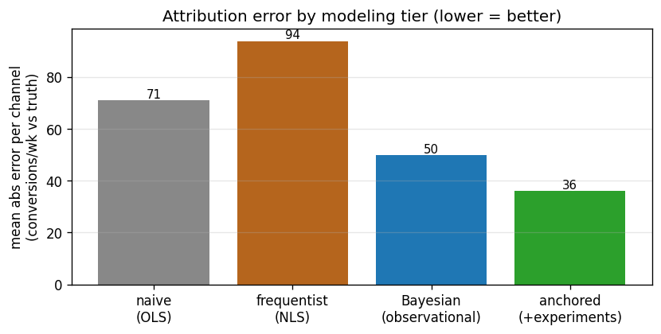
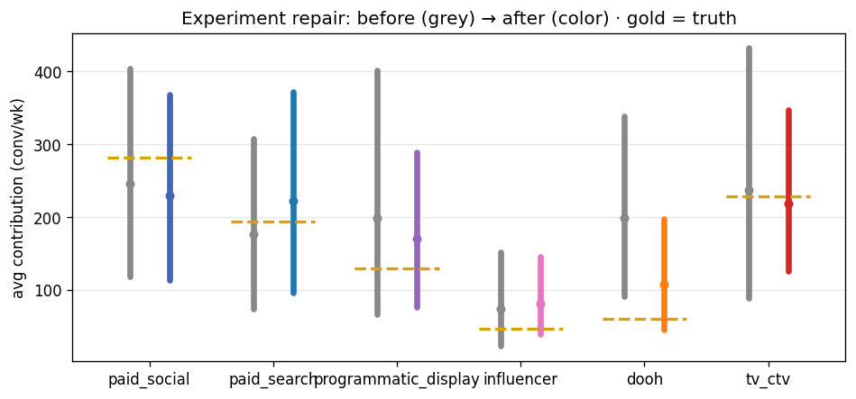
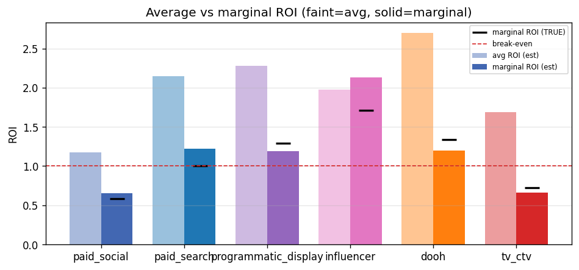
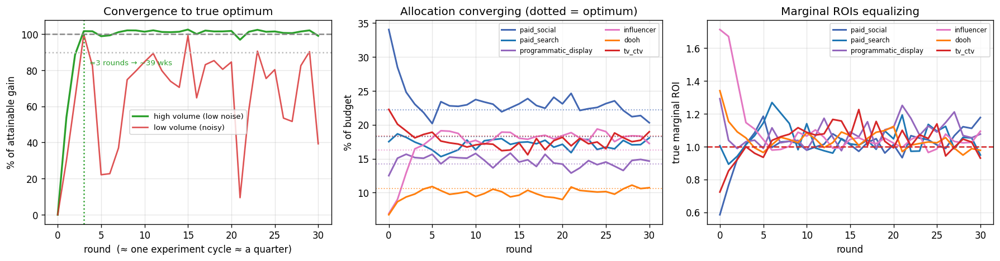
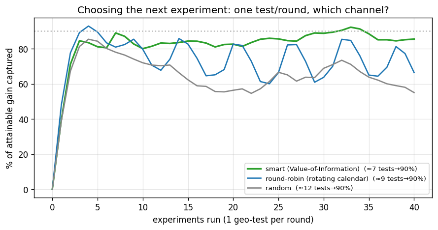

TL;DR
On this dataset (confound ρ≈0.6, baseline 46%), the observational Bayesian model under-credited media and was overconfident. One randomized geo-experiment per channel cut mean per-channel attribution error from 50 to 36 conv/wk. The robust optimizer's only confident move(s): paid_social decrease, influencer increase, tv_ctv decrease. Under idealized always-on testing the maximum attainable fixed-budget lift was +5.3% .
1 · The modeling ladder
Same data, four tiers. Fit improves; attribution does not — until experiments enter.

| channel | true | naive | freq | Bayesian | anchored |
|---|---|---|---|---|---|
| paid_social | 282 | 161 | 122 | 246 | 229 |
| paid_search | 194 | 228 | 314 | 176 | 223 |
| programmatic_display | 130 | 115 | 193 | 199 | 171 |
| influencer | 46 | 80 | 43 | 74 | 81 |
| dooh | 60 | 152 | 118 | 199 | 108 |
| tv_ctv | 229 | 100 | 387 | 238 | 219 |
Per-channel avg contribution (conv/wk) vs the sealed truth, across tiers.
2 · Experiment repair
Confound-immune geo anchors slide the estimate toward truth and tighten the intervals.

| channel | true | anchored est | 89% CI | covers truth? |
|---|---|---|---|---|
| paid_social | 282 | 229 | [114, 368] | HIT |
| paid_search | 194 | 223 | [96, 372] | HIT |
| programmatic_display | 130 | 171 | [77, 288] | HIT |
| influencer | 46 | 81 | [40, 146] | HIT |
| dooh | 60 | 108 | [46, 197] | HIT |
| tv_ctv | 229 | 219 | [125, 347] | HIT |
3 · ROI — average vs marginal
Average flatters; the next dollar (marginal) decides. Graded against true marginal ROI.

| channel | avg ROI (est) | marginal ROI (est) | marginal TRUE |
|---|---|---|---|
| paid_social | 1.17 [0.6,1.9] | 0.65 [0.5,0.8] | 0.59 |
| paid_search | 2.15 [0.9,3.7] | 1.22 [0.8,1.6] | 1.01 |
| programmatic_display | 2.28 [1.0,3.9] | 1.19 [0.8,1.6] | 1.29 |
| influencer | 1.98 [0.9,3.6] | 2.13 [1.4,2.9] | 1.71 |
| dooh | 2.70 [1.1,5.0] | 1.20 [0.8,1.6] | 1.34 |
| tv_ctv | 1.69 [0.9,2.7] | 0.66 [0.4,0.9] | 0.72 |
Blended LTV $220. Estimated marginal ROI tends to run optimistic vs truth.
4 · Robust budget verdicts
Point estimate promised +5.4%; across uncertainty only moves whose interval clears the dead-band are confident.
| channel | median Δ | 89% CI | verdict |
|---|---|---|---|
| paid_social | -15% | [-36%, -7%] | DECREASE |
| paid_search | +6% | [-13%, +26%] | TEST FIRST |
| programmatic_display | +3% | [-25%, +33%] | TEST FIRST |
| influencer | +149% | [+61%, +200%] | INCREASE |
| dooh | +5% | [-43%, +59%] | TEST FIRST |
| tv_ctv | -24% | [-41%, -10%] | DECREASE |
5 · Idealized long-run test-and-learn
Unbiased experiments, no drift: iterate small steps, re-measure, converge.

Reaching 90% of the attainable gain took ≈3 rounds (high-volume testing) / ≈3 (noisy). At one experiment cycle per quarter (~13 wks, run in parallel across channels) that's ≈39 weeks (≈0.8 yrs) — or ~39 wks if tests are noisy; testing one channel at a time instead of in parallel would be roughly 5× longer. This is the no-drift ideal — with drift the optimum keeps moving, so you never fully arrive, you perpetually pursue.
Max attainable fixed-budget lift +5.3%; high-volume testing captures essentially all of it, noisy testing leaves some on the table. Marginal ROIs compress toward equalization — the optimality condition.
6 · Choosing the next experiment (active design)
Testing is scarce, slow and costly — so which channel you test next is itself an optimization. With one geo-test per round, a Value-of-Information policy (test where you're uncertain × near a decision boundary × the most dollars at stake) beats blind round-robin and random.

To capture 90% of the attainable gain: smart selection needed ≈7 experiments, round-robin ≈9, random ≈12 — the smart policy reaches the target with about 19% fewer tests than the rotating calendar (≈97 vs 119 weeks at a quarter per test). The agent holds an uncertainty over each channel's marginal ROI, sharpens it by testing, lets it go stale as spend moves, and reallocates cautiously (damped by what it doesn't know).
What we learned
- Good fit ≠ good attribution. R² rose across tiers while the decomposition stayed wrong until experiments entered.
- The confound biases observational MMM; priors bound the damage but don't cure it (see the channel the model still misses).
- Experiments repair the worst of it — but a biased anchor injects its own error, and robustness-across-uncertainty does not catch anchor bias.
- Average ROI is a trap; marginal ROI drives decisions — and estimated marginal ROI runs optimistic.
- The attainable fixed-budget lift is small (+5.3%); the real program is steady small moves + continuous re-testing, not a one-time jump.